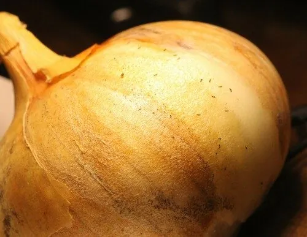

昆虫 · 动物界
烟蓟马 Thrips tabaci

体长约 1 毫米的淡黄色蓟马，翅缘有长缨毛，锉吸叶片和花器汁液，传播番茄斑萎病毒，是蔬菜重要害虫。
- 分类
- 门节肢动物门纲昆虫纲目缨翅目科蓟马科属蓟马属
- 栖息环境
- 葱蒜类蔬菜、烟草、棉花等作物的叶片、花器和嫩梢
- 地理分布
- 世界性分布，中国各地均有发生
- 保护级别
- 暂无评估
物种志
烟蓟马雌成虫体长 1.0–1.3 mm，淡黄至黄褐色，复眼紫红色，触角 7 节。翅狭长，膜质，边缘密生细长的缨毛，停息时平叠在背上。若虫体形与成虫相似，但无翅，色更淡。
烟蓟马是世界性分布的害虫，在中国各地均有发生，寄主包括葱、蒜、韭菜、烟草、棉花、番茄和瓜类等。它一年可发生 10 余代，以成虫和若虫在土缝、叶腋和杂草上越冬，干旱少雨的年份发生尤重。成虫和若虫用口器锉破植物表皮吸食汁液，叶片上留下银白色斑点和黑色排泄物，嫩叶扭曲变形；它还能传播番茄斑萎病毒，造成的损失往往大于直接取食。防治上应结合覆盖银灰膜、释放小花蝽和捕食螨等措施。
形态与习性
- 食性锉吸葱、蒜、烟草、棉花和番茄等植物汁液
- 体长成虫 1.0–1.3 mm
- 翅狭长膜质，边缘密生细长缨毛
- 生活史一年 10 余代，在土缝和叶腋越冬
- 传毒可传播番茄斑萎病毒
- 天敌小花蝽、捕食螨和草蛉
趣味知识
- 烟蓟马的翅像两片细长的羽毛，边缘长满缨毛，因此得名缨翅目。
- 它锉破叶片表皮吸汁，受害处会留下银白色的小斑点和黑点。
- 烟蓟马传播的番茄斑萎病毒，常常比它直接取食造成的损失更大。